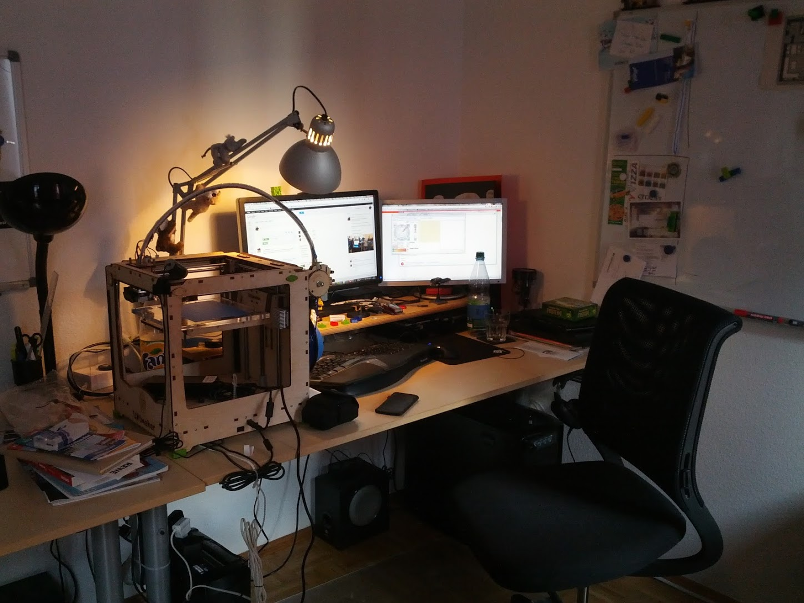

Developing
OctoPrint

3D Meetup Sweden 2019
Who am I?
Gina Häußge aka foosel
- Fun fact: the ß is pronounced like an S
(there is no B there, really!) -
Creator & maintainer of OctoPrint
and mostly sole developer - Passionate coder 👩💻
- Former IT Consultant & Software Architect
- Owner of a 3d printer since late 2012
(help, they keep multiplying!)
Why did I create OctoPrint?
First printer acquired in November 2012
- Obviously wanted my desk back
-
Rough idea how to solve this:
- Web interface
- Server installed on a headless Raspberry Pi
(had just come out that year) - Put printer in spare (bath) room
- Remotely monitor full print via WLAN
-
Problem: existing solutions treated printer as write-only
- Connect
- Upload a file
- Hope that it prints
- I didn't trust that at all, no feedback
-
Wanted to at least
- track temperature
- track progress
- ideally provide webcam view
How hard can it be?
- Sat down & built first version over Christmas 2012
- Published my little pet project, figured "I'm done"
- People started messaging me about it
- Then it took over my life
-
And now I've been working on it for the past six years
(Honestly I'm still unsure how this all happened...) - Learned a ton
Challenge #1
No proper protocol specification
The "protocol"
- Organically grown dialect of GCODE
-
GCODE:
- (standardized) programming language for CNCs from the 1950s
- plain text file format
- nothing about sending messages over serial
- no error correction
- Communication protocol stuff hacked on top
The "protocol"
-
More or less accurate general documentation in the RepRap wiki
- Living document
- Anyone can edit it
- No governing body
- Marlin (mainline) specific documentation on marlinfw.org 👍
-
General problem with both:
- No test suite or reference implementation
- In general no definition of command responses
Result
-
New firmwares or forks with
- New commands that have incompatible meaning elsewhere
- Common functionality in a slightly different or outright broken way
-
Example: possible (simplified) temperature reports
ok T:20.3/0 B:20.2/0 ; Marlin & Repetier, single extruder ok T:20.4/0 T0:20.3/0 T1:20.4/0 B:20.2/0 ; Marlin & Repetier, multi extruder, ; T1 active ok T:20.3/0 T1:20.4/0 B:20.2/0 ; Smoothieware, multi extruder T:20.3/0 B:20.2/0 ; autoreport or blocking heatup T:20.3/0 ; autoreport or blocking heatup T:20.3 ; blocking heatup? ok ==T:20.3 /0 ==B:20.2 /0 ; Creality CR-X 🤨 echo: T20.3 /0.0 B:20.2/ 0.0ok ; Lerdge S 🤦♀️
Consequence
- Regularly need to read firmware source of forks
- These days increasingly difficult (China...)
- Last resort: Logs from & close collaboration w/ users
- Have to draw a line somewhere w/rt broken firmware
- Attempt to standardize: Strong resistance 🤷♀️
Please scream at your vendors if they break widely supported behaviour and not at me, I'm on your side 😉
Challenge #2
Fragmented firmware landscape
Fragmentation left and right
-
Most users rarely update their printer firmware
- if they even can!
- Vendors fork and never merge from upstream again
Result
-
Ancient bugs still present in current printers
I still get tickets regularly caused by bugs in Marlin forks I fixed six years ago- Missing
oks - Translated serial messages
- Broken resend requests
- etc
- Missing
-
Takes ages for new features to propagate
If they propagate at all- E.g.
busyprotocol - E.g. capability reports
- E.g.
Consequence
-
OctoPrint has to accommodate firmware
- from today
- from 7 years ago
- and from anything in between
-
Next to no way to differentiate between those
Marlin V1; Sprinter/grbl mashup for gen6Author: (default)
- ➡ Complex code to handle printer communication
Please update your printer's firmware regularly - and ideally run the mainline version, not an (outdated) vendor fork 😉
Challenge #3
Plugins require backwards compatibility
Plugins in OctoPrint
- Since OctoPrint 1.2.0 (~2015)
- Users can easily add or modify functionality
- Currently over 160 plugins registered on the repository
-
Advantage: Easier to customize OctoPrint to your specific workflow
- Not everyone wants every feature
- Just pick what you need
- Advantage: Bundled plugins are also easier to maintain
- Disadvantage: Easy fixes turn into backwards compatibility nightmares
Result
- Typo in API? Plugin might depend on that name.
- Order of events on subsystem? Plugin might depend on the order.
- Third party dependency version? Plugin might depend on it.
- Python 3 compatibility? Plugin might not be Python 3 ready.
- ➡ Have to think of consequences all the time
Consequence
- Need to be very careful with every single change
- Breaking backwards compatibility = breaking established plugins
- Breaking established plugins = unhappy users 😕
- Sometimes means bending over backwards to solve a trivial issue
Please be patient if a seemingly trivial change appears to take ages 🙂
Challenge #4
Supporting the masses
Consumer mentality vs DIY enthusiasts
-
Early days: Huge overlap between owners & DIY enthusiasts
- Tinker happy
- Happy to google around for a solution
- Capable of fixing stuff themselves
-
These days: Lots and lots of consumers
- Printers are marketed as plug-n-play but aren't
- Many owners never had to tinker before
- OctoPrint might be their first interaction w/ Open Source
Result
-
Lots of development/OSS inexperienced users
- Constant need to ask for logs & more info that "it doesn't work"
- Tricky to explain some things, e.g. why proprietary printer won't work
and can't "quickly be added"
- Sometimes expectation to get support on par with huge multinational company
- Sometimes hostile reaction when told inconvenient truths
Consequence
-
Huge support overhead
- Hours per week of fielding questions
- Repetitive
- Often very frustrating experience
-
➡ Established community forum
- Central place for support, questions, sharing
- Not just me anymore, everyone can help to help
- Seems to work best so far
Please help each other with questions and problems 🙂
Challenge #5
Funding
This has become a job
-
Project size way way past pet project level:
- Maintenance
- New development
- Community management
- Support
- etc
-
Full time job and then some
A lot of people think I'm a multi person company 😋
Consequence
- Turned part time in 2013 (own cost)
- Turned full time in 2014 (single sponsor)
- Turned crowdfunded via Patreon in April 2016
-
It works 😲
but is also really scary - Huge thanks to the community! 😍
If you like OctoPrint, consider supporting my work on it 🤗
Questions?
Website: octoprint.org
Forum: community.octoprint.org
Slides: octoprint.org/slides/3dms19/
Thanks for your attention!
Website: octoprint.org
Forum: community.octoprint.org
Slides: octoprint.org/slides/3dms19/